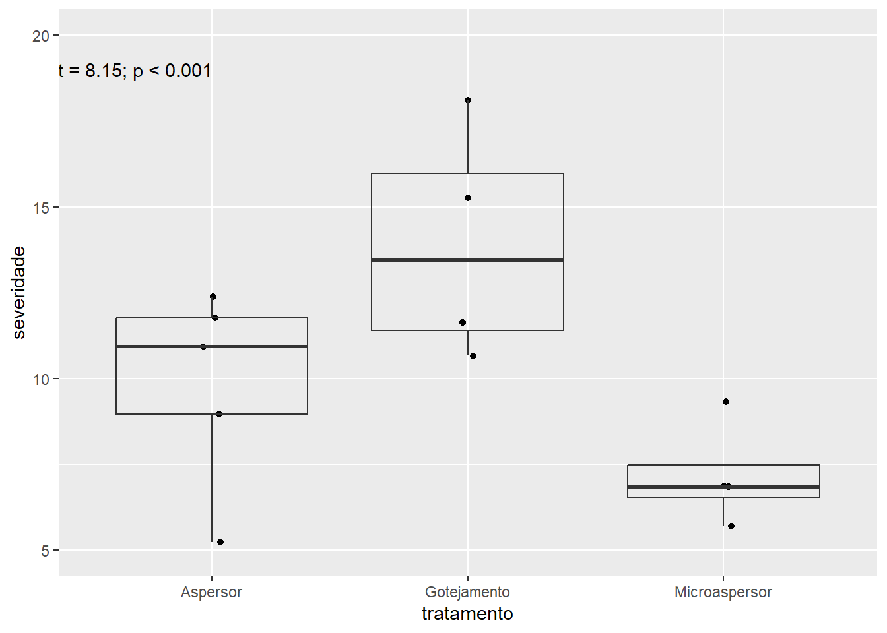
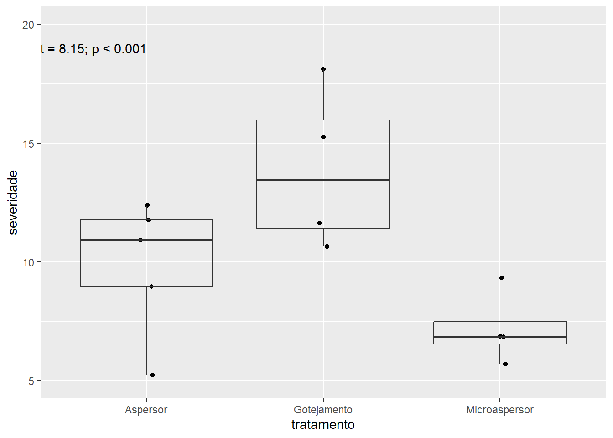

[1] "tratamento" "tempo" "severidade"Code

O teste de hipóteses é um procedimento estatístico utilizado para avaliar se os dados de uma amostra são consistentes com uma suposição formulada sobre a população de origem. Esse processo envolve a comparação entre duas hipóteses:
Hipótese nula (H₀): representa a suposição inicial ou padrão sobre a população — por exemplo, de que não há diferença entre grupos ou de que uma média populacional é igual a um valor específico.
Hipótese alternativa (H₁ ou Ha): propõe uma ideia contrária à hipótese nula, indicando que há uma diferença ou efeito significativo.
O objetivo principal é verificar se os dados da amostra fornecem evidências suficientes para rejeitar H₀ em favor de H₁, com base em um nível de significância previamente definido (geralmente 5%).
Se quisermos testar se duas médias são iguais, as hipóteses podem ser:
H₀: média₁ = média₂ (não há diferença entre os grupos)
H₁:
- média₁ ≠ média₂ (diferença bilateral)
- média₁ \< média₂ (diferença unilateral)
- média₁ \> média₂ (diferença unilateral)Essas formulações variam conforme a pergunta de pesquisa e o objetivo do estudo. O teste de hipóteses nos ajuda a tomar decisões com base em dados amostrais, reduzindo a incerteza ao analisar características populacionais.
O p-valor representa a probabilidade de obter um resultado igual ou mais extremo do que o observado nos dados, assumindo que a hipótese nula seja verdadeira. Em termos simples, ele mede o quanto os dados observados são compatíveis com a hipótese nula.
Quanto menor for o p-valor, maior a evidência contra a hipótese nula — indicando que o resultado encontrado dificilmente teria ocorrido ao acaso. Por outro lado, valores altos de p sugerem que os dados são consistentes com a hipótese nula e que qualquer diferença observada pode ser atribuída à variabilidade natural da amostra.
Na prática, o p-valor é comparado a um nível de significância previamente definido (como 0,05 ou 0,01):
Se o p-valor for menor que o nível de significância, rejeita-se a hipótese nula, indicando evidência estatística de que há uma diferença entre os grupos ou condições estudadas.
Se o p-valor for maior, não há evidência suficiente para rejeitar a hipótese nula, e considera-se que não há diferença estatisticamente significativa.
O p-valor, portanto, é uma ferramenta fundamental na tomada de decisões em testes estatísticos, ajudando a interpretar os resultados com base na probabilidade.
Utilizando o conjunto de dados magnésio, foi criado um gráfico do tipo boxplot para representar a distribuição dos valores. Para complementar a visualização, utilizamos a função annotate() do ggplot2, que permite inserir anotações personalizadas diretamente no gráfico, facilitando a interpretação de pontos importantes ou destacando informações específicas.
[1] "tratamento" "tempo" "severidade"
Para aplicar o teste t, criamos um novo objeto chamado mg2, copiando os dados do objeto mg. Em seguida, utilizamos a função pivot_wider() para reorganizar o formato da base de dados. Essa função é utilizada para transformar dados no formato “longo” em formato “largo”, ou seja, ela aumenta o número de colunas e reduz o número de linhas.
No uso de pivot_wider(), dois argumentos principais são essenciais:
names_from: indica a coluna cujos valores serão transformados em nomes de novas colunas;
values_from: indica a coluna cujos valores preencherão as células dessas novas colunas.
Essa transformação facilita a aplicação de testes estatísticos como o teste t, que muitas vezes requerem os dados organizados em colunas separadas para cada grupo comparado.
Effect sizes were labelled following Cohen's (1988) recommendations.
The One Sample t-test testing the difference between mg2$tempo (mean = 31.50)
and mu = 0 suggests that the effect is positive, statistically significant, and
large (difference = 31.50, 95% CI [16.34, 46.66], t(9) = 4.70, p = 0.001;
Cohen's d = 1.49, 95% CI [0.55, 2.39])Agora visualizaremos os nossos resultados:
O pacote infer oferece uma abordagem moderna e elegante para realizar inferência estatística, utilizando uma sintaxe coerente com o estilo do tidyverse. Ele simplifica o processo de análise ao estruturar a inferência em quatro etapas principais, cada uma representada por uma função intuitiva:
specify(): define a variável ou a relação entre variáveis que será foco da análise.
hypothesize(): formula a hipótese nula que será testada.
generate(): simula conjuntos de dados que seguem a hipótese nula, possibilitando a construção da distribuição nula.
calculate(): computa as estatísticas de interesse sobre os dados simulados, permitindo a avaliação da evidência contra a hipótese nula.
Essa estrutura modular torna a inferência estatística mais transparente, reprodutível e integrada ao ecossistema tidyverse, facilitando o entendimento e a comunicação dos resultados.
[1] "tratamento" "tempo" "severidade"# A tibble: 1 × 7
statistic t_df p_value alternative estimate lower_ci upper_ci
<dbl> <dbl> <dbl> <chr> <dbl> <dbl> <dbl>
1 2.99 10.6 0.0128 two.sided 15.5 4.02 26.9---
title: ""
---
## O que é o teste de Hipoteses e como é definida?
### Teste de Hipóteses
O teste de hipóteses é um procedimento estatístico utilizado para avaliar se os dados de uma amostra são consistentes com uma suposição formulada sobre a população de origem. Esse processo envolve a comparação entre duas hipóteses:
- **Hipótese nula (H₀)**: representa a suposição inicial ou padrão sobre a população --- por exemplo, de que não há diferença entre grupos ou de que uma média populacional é igual a um valor específico.
- **Hipótese alternativa (H₁ ou Ha)**: propõe uma ideia contrária à hipótese nula, indicando que há uma diferença ou efeito significativo.
O objetivo principal é verificar se os dados da amostra fornecem evidências suficientes para **rejeitar H₀** em favor de H₁, com base em um nível de significância previamente definido (geralmente 5%).
### Exemplo de Formulação de Hipóteses
Se quisermos testar se duas médias são iguais, as hipóteses podem ser:
- **H₀:** média₁ = média₂ (não há diferença entre os grupos)
- **H₁:**
```
- média₁ ≠ média₂ (diferença bilateral)
- média₁ \< média₂ (diferença unilateral)
- média₁ \> média₂ (diferença unilateral)
```
Essas formulações variam conforme a pergunta de pesquisa e o objetivo do estudo. O teste de hipóteses nos ajuda a tomar decisões com base em dados amostrais, reduzindo a incerteza ao analisar características populacionais.
### P-valor
O **p-valor** representa a probabilidade de obter um resultado igual ou mais extremo do que o observado nos dados, **assumindo que a hipótese nula seja verdadeira**. Em termos simples, ele mede o quanto os dados observados são compatíveis com a hipótese nula.
Quanto **menor for o p-valor**, maior a evidência contra a hipótese nula --- indicando que o resultado encontrado dificilmente teria ocorrido ao acaso. Por outro lado, **valores altos de p** sugerem que os dados são consistentes com a hipótese nula e que qualquer diferença observada pode ser atribuída à variabilidade natural da amostra.
Na prática, o p-valor é comparado a um **nível de significância** previamente definido (como 0,05 ou 0,01):
- Se o **p-valor for menor que o nível de significância**, rejeita-se a hipótese nula, indicando evidência estatística de que há uma diferença entre os grupos ou condições estudadas.
- Se o **p-valor for maior**, não há evidência suficiente para rejeitar a hipótese nula, e considera-se que não há diferença estatisticamente significativa.
O p-valor, portanto, é uma ferramenta fundamental na tomada de decisões em testes estatísticos, ajudando a interpretar os resultados com base na probabilidade.
### **Agora vamos praticar:**
### Visualização e exportação de dados
Utilizando o conjunto de dados **magnésio**, foi criado um gráfico do tipo **boxplot** para representar a distribuição dos valores. Para complementar a visualização, utilizamos a função `annotate()` do **ggplot2**, que permite inserir anotações personalizadas diretamente no gráfico, facilitando a interpretação de pontos importantes ou destacando informações específicas.
```{r}
library(tidyverse)
library(readxl)
mg <- read_excel("dados-diversos.xlsx")
names(mg)
mg |>
ggplot(aes(tratamento, severidade))+
geom_jitter(width = 0.05)+
geom_boxplot(fill = NA,
outlier.colour = NA)+
ylim(5, 20)+
annotate(geom = "text",
x = 0.7, y = 19,
label = "t = 8.15; p < 0.001")
```
### Teste T
```{r}
mg2 <- mg |>
pivot_wider(id_cols = 1,
names_from = tratamento,
values_from = severidade)
```
Para aplicar o teste t, criamos um novo objeto chamado `mg2`, copiando os dados do objeto `mg`. Em seguida, utilizamos a função `pivot_wider()` para reorganizar o formato da base de dados. Essa função é utilizada para transformar dados no formato "longo" em formato "largo", ou seja, ela aumenta o número de colunas e reduz o número de linhas.
No uso de `pivot_wider()`, dois argumentos principais são essenciais:
- **`names_from`**: indica a coluna cujos valores serão transformados em nomes de novas colunas;
- **`values_from`**: indica a coluna cujos valores preencherão as células dessas novas colunas.
Essa transformação facilita a aplicação de testes estatísticos como o teste t, que muitas vezes requerem os dados organizados em colunas separadas para cada grupo comparado.
```{r}
t <- t.test(mg2$tempo, mg2$severidade )
#install.packages("report")
library(report)
report(t)
```
Agora visualizaremos os nossos resultados:
```{r}
mg |>
ggplot(aes(tratamento, severidade))+
stat_summary(fun.data = "mean_se")
```
## **Pacote infer**
O pacote **infer** oferece uma abordagem moderna e elegante para realizar inferência estatística, utilizando uma sintaxe coerente com o estilo do **tidyverse**. Ele simplifica o processo de análise ao estruturar a inferência em quatro etapas principais, cada uma representada por uma função intuitiva:
- **`specify()`**: define a variável ou a relação entre variáveis que será foco da análise.
- **`hypothesize()`**: formula a hipótese nula que será testada.
- **`generate()`**: simula conjuntos de dados que seguem a hipótese nula, possibilitando a construção da distribuição nula.
- **`calculate()`**: computa as estatísticas de interesse sobre os dados simulados, permitindo a avaliação da evidência contra a hipótese nula.
Essa estrutura modular torna a inferência estatística mais transparente, reprodutível e integrada ao ecossistema tidyverse, facilitando o entendimento e a comunicação dos resultados.
```{r}
#install.packages("dplyr")
library(dplyr)
library(infer)
# Verifique o nome das colunas
names(mg)
#comparação entre os tratamentos Gotejamento e Aspersor, porque teste T faz para 2 niveis.
mg_filtrado <- mg |>
filter(tratamento %in% c("Gotejamento", "Aspersor"))
mg_filtrado |>
t_test(severidade ~ tratamento, order = c("Gotejamento", "Aspersor"))
```